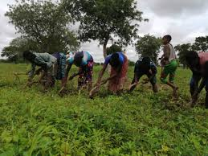
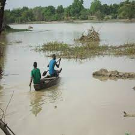
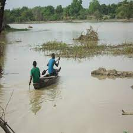
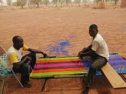
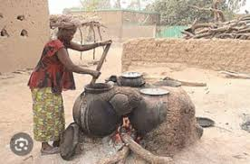
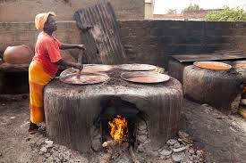
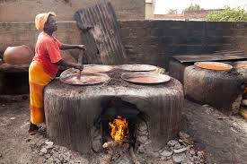

SAVOIR FAIRE DEDOULAIS
Agriculture
Ville par excellence agricole, la principale activitée pratiquée par les Dédoulais est l'agriculture sur de très grande superficie.


La peche
Disposant de l'un des plus grand cours d'eau du BF ,la peche est très pratiquée par la population en particulier plus les BOZOS ou MAITRES DE L'EAU


 

Artisanat
Le savoir Dedoulais ne se limite pas à l'agriculture ni à la peche.Non, ils peuvent transformer eux meme des matières locaux en des produits extraordinaire.DEcouvrez les sur les photos!!!


 
